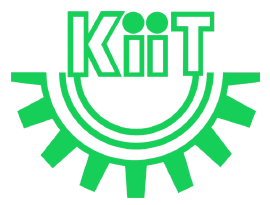
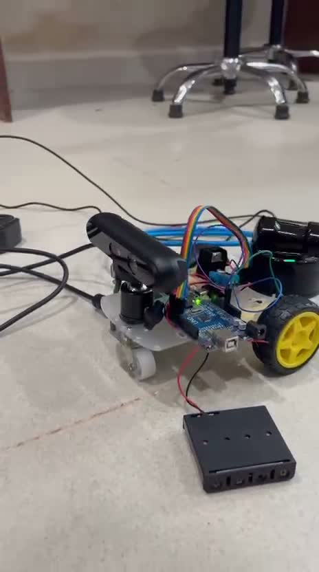
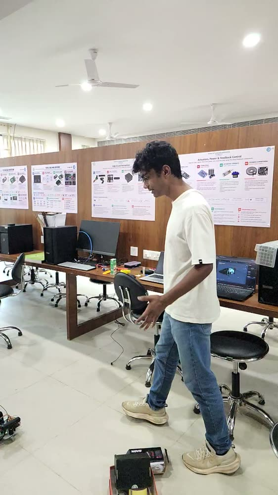
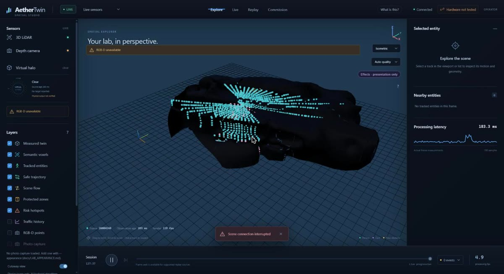
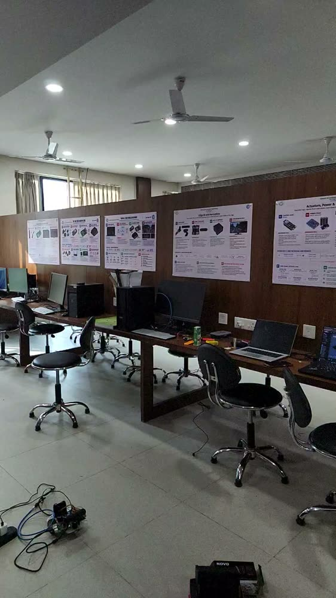
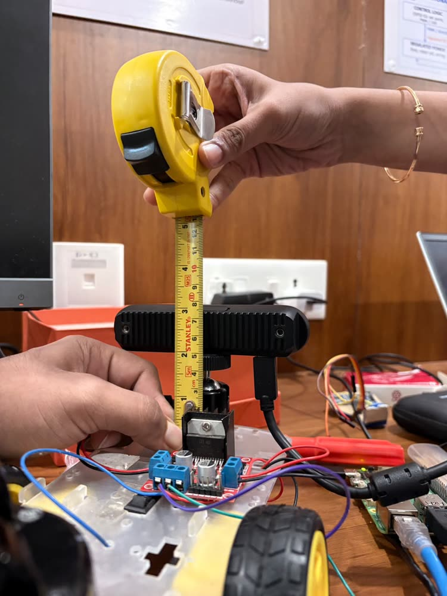
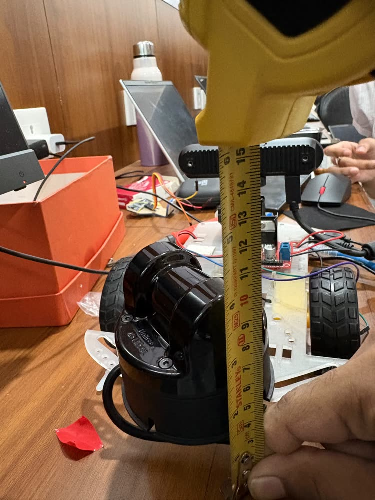

GROUP NO. 29
LAB RUN ON THE REAL RIG: 5 NOV 2026
Lab Digital Twin:
Autonomous Scanning and 3D Reconstruction
HIRANYA KUMAWAT (24155539), SUMEDHA G (2405198), SUJAL AGARWAL (24051292),
NAMAN SINGH (24052230), UTKARSH JHA (24155593), AASUTOSH SWAIN (24157002)
NAMAN SINGH (24052230), UTKARSH JHA (24155593), AASUTOSH SWAIN (24157002)
K-Explore (Robotics)
Kalinga Institute of Industrial Technology (Deemed to be University), Bhubaneswar
Introduction
Illustration, not data · stylised top view of a LiDAR sweep
- Motivation: floor plans and photos lose a lab's 3D geometry; range and depth sensors on a mobile platform can capture it.
- What we built: a small wheeled cart (22.9 x 15.2 cm, pushed by hand, motors off) carrying a Unitree L2 4D LiDAR and an Orbbec Gemini 336L RGB-D camera, with a Raspberry Pi 5 streaming raw sensor data over Wi-Fi to a laptop that builds the twin.
- All software is ours (Python 3.12 + TypeScript), from sensor transport to studio.
Objectives
- 1Capture lab geometry with a mobile scanning workflow.Lab recorded from the cart; twin from one viewpoint. Today's moving scan failed QA.PARTLY
- 2Integrate LiDAR and RGB-D in one pipeline and a common frame.Synchronizer built; camera-LiDAR calibration not done, so the live run was LiDAR-only.PARTLY
- 3Align scans and reconstruct the lab in 3D.ICP + pose graph, occupancy, TSDF and a Poisson mesh twin of the lab.DONE
- 4Visualize the result interactively.React 19 + Three.js browser studio, "What is this?" explainer, static replay site.DONE
- 5Validate in simulation and on replayed data before live use.Rehearsals on recorded real data, then a 15-min LiDAR-only live run on the rig.DONE
DONE = built and exercised on recorded or live data. PARTLY = built, but a step is still missing. "Done" is not a claim of accuracy.
Methodology
SOFTWAREPython 3.12NumPy · SciPy [6,7]Open3D [3]OpenCV [4]PyTorch [5]React 19 · Three.js
TESTS713 Python testsweb unit + Playwright E2Elocal CI
Experimental Results
716 frames
0 lost in the first 60 s Pi-to-laptop stream over Wi-Fi, 5.17 MB/s.
bench · stationary
7,171 frames
0 lost in a 600 s stream; clocks agreed within ±0.9 ms.
bench · stationary
1,435 sweeps
120 s lab recording on the cart at 11.98 Hz, 0 lost; IMU at 251 Hz.
lab · 5 Nov
61,367 points
Surface points of the lab twin: 359 scans, 14,093 measured cells. One viewpoint; floor from the tape.
lab · 5 Nov
5,510 frames
15 min live on the real rig over Wi-Fi, LiDAR-only: 0 drops, memory flat 1.51-1.64 GB.
live · 5 Nov
0.985 fitness
Live run localized against the twin, ICP RMSE 3.4 cm. A fit, NOT accuracy.
live · 5 Nov
42 mm
Pose spread of a rig that never moved: static precision, NOT accuracy.
bench · stationary
30 min
Rehearsal with no errors: recorded real data replayed through the real transport. Not live.
rehearsal · recorded data
Not a world-to-display latency: that was never measured. Source: reports/rehearsal/README.md (fig 7) and reports/lab/README.md.
The Rig and the Live Run






Not Measured Yet
Stated plainly, so nothing above is read as more than it is.
- Camera-LiDAR calibration: not done. The live run was LiDAR-only.
- Accuracy against independent ground truth: not measured. Fitness, RMSE and pose spread are fit and precision numbers.
- World-to-display latency: not measured. The numbers above are processing time per frame.
- 35 ms target: not met (best live p50 140 ms).
- 30-minute hardware-verified run: not done; the 30-min run was a rehearsal on recorded data (hardware_verified stays false).
- Moving commissioning scan: today's push failed QA; the twin is from one viewpoint.
- Physical LED halo and autonomous driving: not done; the cart was pushed by hand.
Conclusions
- The whole chain runs on real hardware: sensors on a cart, a Pi 5 streaming raw data over Wi-Fi, a laptop building the twin, a browser studio showing it.
- The transport lost 0 frames in the bench streams, the lab recording and the live run.
- A lab twin was built from a hand-pushed recording, and a 15-min LiDAR-only live run held its place against it.
- Per-frame time is far from the 35 ms target; accuracy is unmeasured.
Future Work
- Calibration of camera and LiDAR with a target.
- A full moving scan with loop closure.
- Landmark accuracy against tape measurements.
- Latency measured with a 240 fps phone camera.
- Autonomous navigation of the cart.
QR
Interactive replay site
aethertwin-showcase.vercel.app
References
- Unitree Robotics, "Unitree 4D LiDAR L2 User Manual," v1.1, Oct. 2024. unitree.com/L2
- Orbbec, Gemini 330 series documentation (Gemini 336L). orbbec.com
- Q.-Y. Zhou, J. Park, V. Koltun, "Open3D: A Modern Library for 3D Data Processing," arXiv:1801.09847, 2018.
- G. Bradski, "The OpenCV Library," Dr. Dobb's J. Software Tools, 2000.
- A. Paszke et al., "PyTorch: An Imperative Style, High-Performance Deep Learning Library," NeurIPS, 2019.
- C. R. Harris et al., "Array programming with NumPy," Nature, 585, pp. 357-362, 2020.
- P. Virtanen et al., "SciPy 1.0: Fundamental algorithms for scientific computing in Python," Nature Methods, 17, pp. 261-272, 2020.
Digital poster. Animations are presentation only: the LiDAR sweep is an illustration, not data; the packet flow shows the data path, not measured traffic. Every number comes from the project's reports (reports/lab, reports/rehearsal, reports/hardware, docs/LAB_DAY.md).